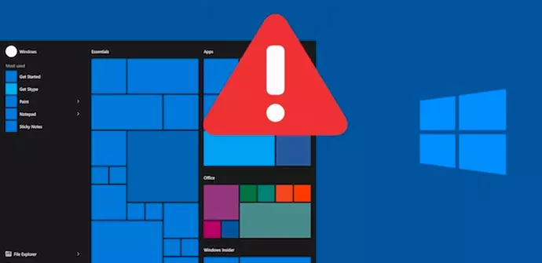
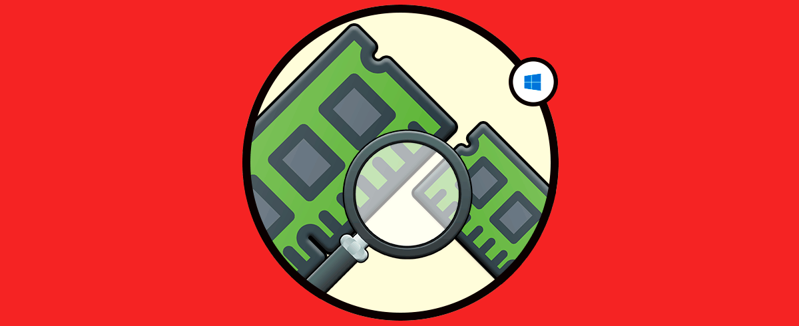
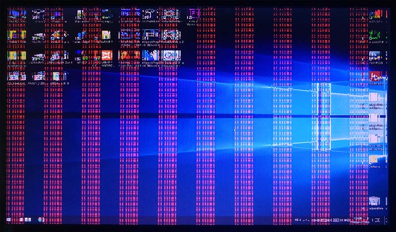

Problemas comunes de los computadores

Las computadoras son nuestra mano derecha y casi que no podemos vivir sin ellas, aunque pueden darnos varios dolores de cabeza. Y cuando eso pasa, intentás reiniciar la compu o darle unos golpecitos, porque pensás que quizá así se solucionará… pero no. Si alguna vez te pasó, aquí recopilamos los problemas más comunes que podemos tener con las computadoras y a qué pueden deberse. ¿Te pasó con alguno?
Top problemas de computadores mas comunes
- La temida pantalla azul:Uno de los problemas más conocidos que enfrentan los usuarios de Windows, la “pantalla azul de la muerte”. Tiene que ver con un error de Microsoft y significa que la computadora no puede (o está en peligro de no poder) recuperarse de un error del sistema. Generalmente viene acompañado de un texto que indica el código de error al que corresponde y sirve como referencia para saber qué pasó. Usualmente indica un problema serio, que puede estar relacionado con el hardware o el driver. 
- Fallas del Sistema Operativo:Una las fallas más comunes que puede tener una computadora tiene que ver con colapsos del sistema operativo. Estos pueden suceder por varios motivos: corte del suministro de energía, excesiva cantidad de programas instalados o no tener suficiente memoria RAM. Seguro utilizás el reinicio para solucionar este tipo de problemas, pero en realidad es una solución meramente transitoria. Seguramente más adelante sigas enfrentándote a fallas de este tipo. Lo más recomendable siempre es contactar a un profesional cualificado para poder tratar el problema de raíz. 
- Problemas con la RAM:Por más que tengas 16 gigas de RAM en tu computadora, si no está configurada correctamente, podría estar utilizando solo una porción de su capacidad total para los procesos. Si se utiliza solo una parte de la RAM, los juegos y programas funcionarán más lento o directamente no lo harán. Los problemas con la RAM pueden darse por muchos motivos, uno de ellos puede ser que un slot de la RAM no está encajando correctamente, lo que provoca que no funcione. 
- Fallas con la tarjeta gráfica:¿Cómo reconocer estas fallas? Si tu computadora emite un pitido al encender o arranca y se pone en marcha, pero no ves nada en el monitor. También puede pasar que veas rayas verticales en la pantalla, que se ponga inestable cuando llevás mucho tiempo usándola o cuando un aplicación determinada esté funcionando. Una ventilación correcta y un buen mantenimiento son claves en la mayoría de los componentes que forman parte de tu computadora; puede que tu tarjeta gráfica levante mucha temperatura y haga saltar las soldaduras que la mantenían unida con la placa base.
- Computadora infectada con virus:Los virus son un tipo de software que puede dañar tu computadora y sistemas relacionados. Estos tienen que instalarse para poder empezar a causar problemas, lo que puede pasar mucho más rápido de lo que pensás y sin que te des cuenta. Por ejemplo, descargar un archivo de un sitio web puede resultar en una computadora infectada. Una vez que lo abrís, el virus puede dañar archivos y hasta hacer que todo funcione más lento usando los recursos del sistema. Nuestro consejo es siempre tener un antivirus instalado que te alertará sobre los archivos que descargás. Si sospechas que tu computadora está infectada, llevala a un técnico para que te ayude a eliminar el virus.